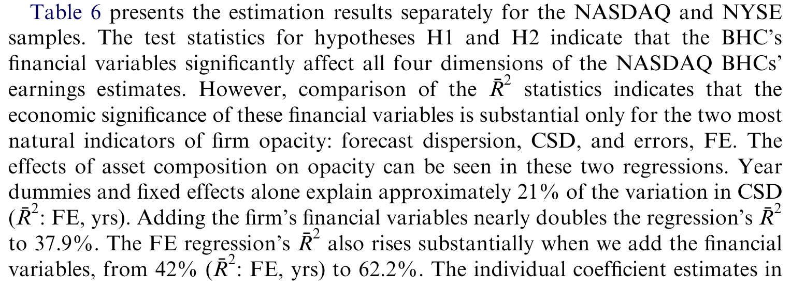
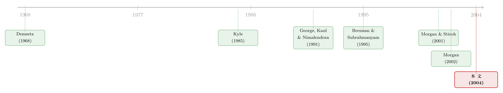

银行的资产不是「看不懂」，只是「没意思」
本文读的是 Flannery, Kwan & Nimalendran (2004, Journal of Financial Economics)：他们用银行股票的交易数据去检验一句几乎被当成常识的话——「银行资产不透明」。结论是个温柔的反转：大银行的股票交易特征和同等规模的非金融公司几乎一模一样；小银行交易稀疏、波动率低，但这并不是因为它们「看不懂」，而是因为它们「没意思」（not opaque, just boring）。
1 一句几乎没人质疑的常识
先抛一个问题：为什么银行要被政府这么严格地管着？
答案有很多个版本，但其中流传最广、也最有说服力的一个是：银行的资产太难看懂了。贷款是一笔笔私下谈成的、量身定制的合约，外人无从知晓借款人的真实信用状况，只有银行的内部人才掌握那些「软信息」。于是一旦某家银行的贷款出了问题，市场分不清到底是这一家的事，还是所有做类似贷款的银行都中了招——恐慌、挤兑、传染就这样接踵而至。正因为外部投资者「看不清」，市场纪律失灵，政府才不得不顶上来，又是存款保险，又是现场检查，又是最后贷款人。
这套逻辑有多深入人心？连格林斯潘都说，银行贷款「即便在价格信息和交易活动增加的今天，仍然常常缺乏透明度和流动性，这无疑让许多银行贷款的风险难以量化、难以管理」(Greenspan, 1996)。Goodhart (1988) 说得更直白：「既然没人真正知道这些不可交易贷款的『真实』价值，那么只要发现一家银行的部分贷款价值受损，就足以让人怀疑所有做过类似贷款的银行是否还有偿付能力。」
这就是所谓的 银行资产不透明 (bank opacity) 假说。它听上去太顺理成章了，以至于很少有人停下来问一句：这是真的吗？
这篇论文最迷人的地方，恰恰在于它愿意把一句「人人都信」的话拿到数据面前重新审一遍。它的答案不是简单的「对」或「错」，而是把「不透明」这个含混的词，拆成了两个完全不同的东西。
2 「不透明」到底是什么意思？
接着，一个自然的问题是：我们怎么去测量「不透明」？
作者的切入点很巧妙。他们说：如果一家公司的资产真的难以被外人估值，那么这种困难一定会泄露在它股票的交易特征里。这就是市场微观结构 (market microstructure) 这门学问的用武之地。
具体来说，「看不懂」会留下两类指纹。
第一类指纹，藏在买卖价差里。 做市商在挂出买价和卖价时，其实是在向所有交易者免费派发一组期权——只有当他的报价「太高」或「太低」时，知情交易者才会来「吃」掉它。一只股票背后潜在的私有信息越多，做市商被这种「逆向选择」坑的风险就越大，他就只能把价差拉得更宽来自我保护。所以，买卖价差里的 逆向选择成分 (adverse selection component, AS)，正是衡量「这只股票有多少内幕信息」的温度计。如果银行资产真的不透明，那么银行股的 AS 成分就应该显著地高于普通公司。
第二类指纹，藏在分析师的预测里。 一家公司越不透明，分析师对它盈利的预测就应该越不准、越分散。所以，预测误差 (forecast error) 和预测分歧 (dispersion) 是另一支温度计。
但真正关键的一步在于：作者意识到，低波动率和稀疏交易，本身是有歧义的。
设想一只波动率很低、半天不成交一笔的银行股。这背后可能有两个截然不同的故事：
- 故事 A（无聊）：银行的资产价值本来就稳定、好懂，没什么新信息，大家自然懒得交易，价格也不怎么动。
- 故事 B（不透明）：银行的资产价值其实剧烈波动，但相关信息只在很稀疏的时点才被一次性披露出来。在两次信息到达之间的漫长「信息真空」里，价格无从更新，于是测出来的短期波动率虚假地低。
这正是全文的「核心张力」：同样的「安静」，可能来自资产太好懂，也可能来自资产太难懂。 你不能只看波动率和成交量就下结论。必须找到一把能把 A 和 B 分开的尺子。
那把尺子，就是分析师预测的准确度。如果是故事 B（不透明），分析师面对的是一团迷雾，预测误差应该很大；如果是故事 A（无聊），分析师闭着眼睛都能猜对，预测误差应该很小。两个故事在这里给出了方向相反的预言。这就是识别的关键。
3 识别策略：给每家银行配一个「双胞胎」
那么，怎么知道银行的交易特征到底是「高」还是「低」？跟谁比？
作者的做法是 配对 (matching)。他们给每一家样本银行控股公司 (bank holding company, BHC)，从 CRSP 里挑一个非金融、非公用事业的对照公司，匹配的标准是：股权市值最接近，且股价在 25% 以内，且在同一个交易场所（NYSE/AMEX 或 NASDAQ）。每个日历年初重新配一次对。
这个设计的妙处在于，它把「规模」和「交易机制」这两个最大的干扰因素摁住了——剩下的差异，才更可能来自「银行 vs 非银行」这个我们真正关心的对比。
样本里的银行天然分成两群，而这恰恰成了论文最有力的对照：
- NYSE 样本：58 家在 NYSE/AMEX 上市的 BHC，块头大，由单一专家做市商撮合；
- NASDAQ 样本：262 家在 NASDAQ 交易的 BHC，规模小，由多个交易商竞争报价。
数据上，他们从 FR Y-9C（美联储要求 BHC 上报的合并财务报表）取季末财务变量，从 ISSM（1990–1992）和 TAQ（1992 之后）取逐笔交易数据，从 I/B/E/S 取分析师盈利预测。剔除掉股价低于 \$2、季度成交少于 100 笔、或价差超过股价 10% 的观测后，最终样本是 320 家 BHC、5,100 多个「公司—季度」观测，覆盖 1990–1997 年。
4 主要结果：大银行「泯然众人」，小银行「安静得反常」
4.1 微观结构这一关
先看第一支温度计——买卖价差和它的逆向选择成分。
NYSE 那群大银行的表现，可以用「泯然众人」来形容：它们的价差、成交量、波动率，几乎和配对的非金融公司无法区分。如果大银行真的不透明，这一关它们就应该露馅，但它们没有。
NASDAQ 那群小银行则呈现出一幅更耐人寻味的画面。它们的价差和对照组很接近，但成交量和波动率却低得多。从汇总统计就能看出这种反差：NASDAQ 银行季度平均成交 2.24 百万股、1,433 笔交易，年化波动率 STD = 12.33%；而 NYSE 银行是 20.54 百万股、10,052 笔交易、STD = 47.84%。
但最关键的数字是逆向选择成分。如果「不透明」假说成立，银行股的 AS 成分应该异常地高。可数据完全不配合：用 George–Kaul–Nimalendran 方法算出的 AS-GKN，NASDAQ 银行平均只有 0.66%，甚至低于 NYSE 银行的 0.95%。换句话说，做市商在为银行股报价时，并没有表现出对「内幕信息」的格外恐惧。这是反对「不透明」的第一块硬证据。
接着，作者做了第二步：直接检验资产构成是否影响交易特征。逻辑是，如果贷款比国库券更难估值，那么贷款占比高的银行就应该有更宽的价差。回归结果是「统计上显著，但经济上微弱」——资产负债表构成确实显著地影响了交易成本（这与「银行资产在不透明程度上有差异」一致），但它的解释力非常小，和传统微观结构变量的解释力相当。如表 6 所示，这种「分样本（NASDAQ / NYSE）」的估计在两个市场里都给出了同样的图景。

Table 6: presents the estimation results separately for the NASDAQ and NYSE
这里有个微妙的双重信息：一方面，资产构成确实在边际上影响交易特征，说明「不透明」不是零；另一方面，它的解释力小到几乎可以忽略，说明「不透明」也远没有传说中那么大。银行资产之间有透明度的差异，但这点差异撑不起「银行格外不透明」这个宏大叙事。
4.2 决定性的一关：分析师其实预测得很准
到这里，故事 A 和故事 B 还没分出胜负——NASDAQ 银行那种「低波动、稀疏交易」，仍然可能是「无聊」也可能是「不透明」。
于是真正决定性的一步登场了：看分析师。
结果干净利落。跟踪小银行的分析师人数确实更少——NASDAQ 银行平均只有 NEST = 5.21 个分析师，而对照组多得多（NYSE 银行有 19.75 个）。乍一看，「跟的人少」似乎支持「不透明」。
但预测的准确度给出了相反的答案。NASDAQ 银行的预测误差 FE 中位数只有 34.17 个基点，而且作者发现，这些银行的预测误差显著低于配对的对照公司。也就是说，虽然跟踪银行的分析师不多，但他们的预测格外准。
这正是故事 A 的指纹，而不是故事 B 的。如果银行真的是一团迷雾（故事 B），分析师怎么可能预测得比普通公司还准？唯一说得通的解释是：银行的盈利又稳又好猜。它们交易稀疏、波动率低，不是因为没人看得懂，而是因为压根没什么值得交易的新消息——
银行不是「看不懂」，只是「没意思」。
（关于「逆向选择价差能不能反过来透露公司的信用质量」这个紧密相关的话题，可参见《评级藏在买卖价差里：当股票的「逆向选择」预言了公司的信用》；而关于「存款人到底看不看得懂银行财报」，可参见《越透明，越脆弱？——存款人其实看得懂银行的财报》。)
5 文献脉络
这篇论文站在两条河流的交汇处。
第一条河，是市场微观结构。 源头是 Demsetz (1968)，他第一个论证了股票的价差系统地取决于若干交易属性；Bagehot (1971) 紧接着指出，其中一个关键属性是「是否存在掌握私有信息的交易者」。但真正点燃这条河的，是 Kyle (1985) 关于做市商信息问题的模型——它催生了一整套把价差分解成「订单处理成本 + 存货成本 + 逆向选择成分」的实证方法 (Glosten & Harris, 1988; Stoll, 1989; George, Kaul & Nimalendran, 1991; Lin, Sanger & Booth, 1995)。其中 AS 成分能否真的度量信息，又被 Brennan & Subrahmanyam (1995)、Krinsky & Lee (1996) 反复验证：前者发现分析师越多、AS 价差越小，后者发现盈利公告前两天 AS 成分显著放大。本文用的，正是这套已经被磨利了的工具。
第二条河，是银行不透明的理论与实证。 理论一脉从 Campbell & Kracaw (1980)、Berlin & Loeys (1988) 到 Diamond (1989, 1991)，都论证银行内部人掌握着关于借款人的私有信息。实证上，与本文最针锋相对的是 Morgan (2002)：他用「评级分歧」（穆迪和标普给同一只债券打出不同评级）作为不透明的代理，发现银行更容易出现分歧评级，且资产构成显著影响分歧概率。Morgan & Stiroh (2001) 用次级债定价得到类似结论。Flannery & Houston (1999) 则发现，被美联储检查过的季度，银行的市值和账面值更吻合。

本文的位置很清楚：它不否认银行资产之间存在透明度差异（这点和 Morgan 一致），但它用股票市场这套更细颗粒的证据告诉我们——这点差异远不足以让银行整体显得「格外不透明」。Morgan 看的是债券评级机构的「分歧」，本文看的是股票做市商的「恐惧」和分析师的「准头」；两把尺子量出了一个更平衡的结论。
6 评论与延伸（Q&A + 研究方向）
(a) 几个可能的疑问
Q：把「不透明」等同于「分析师预测不准」，会不会偷换了概念？
不算偷换，但确实是一个特定的操作化定义。作者明确把「不透明」定义为「外部投资者无法准确估值、而内部人（或许）可以」——这正是 Kyle (1985) 里那个推高 AS 价差的信息不对称。预测误差和 AS 成分是这个定义下两支逻辑自洽的温度计。要警惕的是，它度量的是「可预测性」，而 Morgan 度量的是「意见分歧」——两者相关但不等同。一只「人人都同样看不准」的股票可能预测误差大却分歧小。
Q：NYSE 银行和对照组「几乎一样」，会不会只是配对配得太好，把差异也一起匹配掉了？
这是个真问题。配对按市值和股价来做，而市值本身就和透明度相关，所以存在「过度控制」的隐忧。但作者的反驳是：恰恰因为大银行连这么细的匹配都挑不出差异，才更说明它们「不特别」。真正的信息量来自 NASDAQ 那一组——那里出现了「低波动 + 准预测」这个对照组没有的组合，这不是匹配能造出来的。
Q：分析师预测准，会不会是因为银行在「盈余管理」、把数字做得好猜？
这是文献里真实存在的担忧（Robb (1998) 就研究过金融机构里分析师预测与盈余管理的互动）。如果银行系统性地平滑盈利，预测误差低就可能是「管」出来的假象，而非「好懂」的真相。本文没有直接排除这条，是它识别上的一个软肋——「盈利稳定」既可能是资产本性，也可能是会计选择。
Q：低波动率难道不正是「信息稀疏到达」（故事 B）的表现吗？怎么就排除了？
单看波动率确实排除不了，这正是作者反复强调的歧义。排除靠的是分析师准确度这个方向相反的预言：故事 B 要求预测误差大，数据却显示预测误差小。是这第二支温度计，而非波动率本身，把天平压向了「无聊」。
Q：结论是不是只对「上市的、被监管的」银行成立？
几乎可以肯定。文章自己就强调，监管披露（
FR Y-9C、现场检查、公开的执法行动）本身就在降低银行的不透明度。所以结论应读成「被充分监管、且能公开交易的 BHC 不比同规模非银行更不透明」，而不是「银行资产在物理上很透明」。这对那些不上市、不受 BHC 监管的机构未必适用。
Q：这对「银行需要特殊监管」的论证意味着什么？
它削弱了「因为资产不透明所以必须监管」这条腿，但没有推翻整座大厦。即便资产本身不那么难懂，挤兑的协调失败、系统性外部性、存款保险的道德风险，依然是监管的独立理由。本文真正的贡献是把「不透明」从一个被默认的前提，降级为一个需要用证据说话的命题。
(b) 几个可能的研究问题与提案
1. 把这套检验搬到 2008 与 2020 两场危机上。
【经济故事】本文样本停在 1997 年，那是个相对平静的年代。「无聊」假说的真正考验在压力时刻：当资产价值剧烈重估时，银行的 AS 成分和分析师误差会不会突然飙升——也就是「无聊」会不会在危机里变成「不透明」？ 【可行性】高。
TAQ+I/B/E/S+FR Y-9C数据延续至今，可直接把样本扩展到 2007–2009、2020，做事件窗口的 AS 成分与预测误差对比。识别上可用同样的配对设计，难点是危机期匹配公司的可比性。
2. 把「逆向选择价差」接到公司债/信用市场上。
【经济故事】本文在股票市场里没找到银行格外高的 AS 成分。一个自然的延伸：在银行自己发行的次级债二级市场里，AS 成分是否也同样「正常」？如果债市和股市给出不一致的不透明信号，那本身就是关于「谁更知情」的证据。 【可行性】中。
TRACE提供了债券逐笔数据，可估算债券层面的价差与价格冲击；难点是债券交易稀疏，AS 分解的统计精度不如股票，需要 size-adapted 的流动性度量。
3. 外资持有人与银行不透明的交互。
【经济故事】如果银行资产对「本地、知情」的投资者好懂，对「远方、信息劣势」的外资却不好懂，那么外资持股比例高的银行，其 AS 成分和预测分歧应该系统性更高。这把「不透明」从公司属性变成了「相对于谁」的属性。 【可行性】中。需要把跨国银行持股数据（如 FactSet/EPFR）与各国微观结构数据拼起来；识别上可借助指数纳入等可投资度冲击，但跨市场交易数据的可得性是主要约束。
4. 用机器读研报，直接度量「银行到底好不好懂」。
【经济故事】本文用「预测误差」间接推断好懂程度。能不能更直接？用 NLP 去读分析师对银行 vs 非银行的研报，看文本的不确定性措辞、修正频率，验证「无聊」是否也体现在分析师写了什么里。 【可行性】中。研报文本数据（如 Refinitiv）可得，文本不确定性度量已有成熟方法；难点是把文本特征干净地映射到「资产不透明」而非「行业惯用语」。
7 我的判断
这篇文章的贡献，不在于它发现了什么惊人的系数，而在于它重新定义了一个被滥用的词。「不透明」长期以来是银行监管论证里一块免检的基石，而本文把它拆成「难以估值」和「无聊」两件事，再用两支方向相反的温度计——AS 成分与分析师准确度——把它们分开。这种「先把概念讲清楚，再让数据说话」的克制，本身就是好实证研究的范本。
对识别，我有两点保留。其一是过度控制：按市值配对，而市值与透明度相关，这可能稀释了银行与非银行的真实差异，尤其在 NYSE 子样本里。其二是盈余管理的内生性：分析师预测准，既可能是「资产好懂」，也可能是「盈利被平滑」，本文没有把这两条干净地分开，而这恰恰是「无聊」假说最脆弱的接缝。
后续我最想看到的，是把这套检验放到危机里去——「无聊」是一种常态，还是一种会在压力下崩塌的幻觉？如果 2008 年银行股的 AS 成分和分析师误差确实集体跳升，那本文的结论就需要加上一句重要的限定：银行平时不难懂，但难懂的时候，恰恰是最要命的时候。
参考文献
- Benston, G., Hagerman, R. (1974). Determinants of bid–asked spreads in the over-the-counter market. Journal of Financial Economics 1, 353–364.
- Brennan, M., Subrahmanyam, A. (1995). Investment analysis and price formation in securities markets. Journal of Financial Economics 38, 361–381.
- Demsetz, H. (1968). The cost of transacting. Quarterly Journal of Economics 82, 33–53.
- Diamond, D.W. (1991). Monitoring and reputation: the choice between bank loans and directly placed debt. Journal of Political Economy 99, 689–721.
- Flannery, M., Houston, J. (1999). The value of a government monitor for firms with hard-to-value assets. Journal of Money, Credit and Banking 31, 14–34.
- Flannery, M., Kwan, S., Nimalendran, M. (2004). Market evidence on the opaqueness of banking firms' assets. Journal of Financial Economics 71(3), 419–460.
- George, T., Kaul, G., Nimalendran, M. (1991). Estimation of the bid–ask spread and its components: a new approach. Review of Financial Studies 4, 623–656.
- Krinsky, I., Lee, J. (1996). Earnings announcements and the components of the bid–ask spread. Journal of Finance 51, 1523–1535.
- Kyle, A. (1985). Continuous auctions and insider trading. Econometrica 53, 1315–1335.
- Lin, J., Sanger, G., Booth, G. (1995). Trade size and components of the bid–ask spread. Review of Financial Studies 8, 1153–1184.
- Morgan, D. (2002). Rating banks: risk and uncertainty in an opaque industry. American Economic Review 92, 874–888.
- Morgan, D., Stiroh, K. (2001). Market discipline of banks: the asset test. Journal of Financial Services Research 20, 195–208.
- Stoll, H. (1989). Inferring the components of the bid–ask spread: theory and empirical tests. Journal of Finance 44, 115–134.